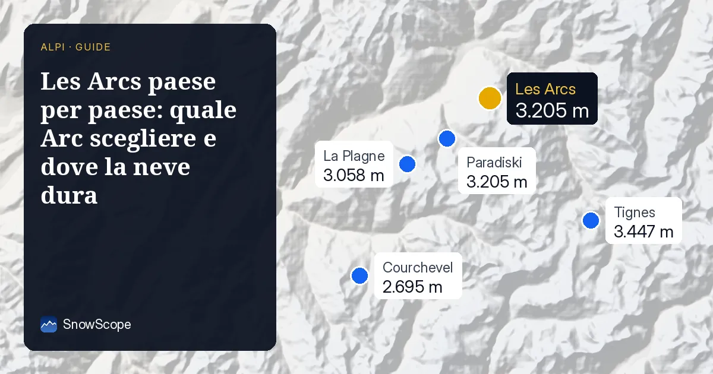

Les Arcs paese per paese: quale Arc scegliere e dove la neve dura
Les Arcs si estende su una montagna con quattro villaggi costruiti appositamente, disposti per altitudine sopra Bourg-Saint-Maurice. Dove alloggi definisce la tua intera settimana: quanta neve trovi alla porta, come ci arrivi, e quali piste ti accolgono ogni mattina. La scelta non è ovvia, e conta più di quanto la maggior parte della gente pensi.
Le previsioni neve in tempo reale per Les Arcs nell'app SnowScopeAltezza neve, allerte powder e mappa 3D, gratis.

Arc 1600: il punto di partenza accessibile
Arc 1600 ha aperto nel 1968 e rimane il villaggio più facile da raggiungere senza auto. La funicella Arc en Ciel, costruita nel 1986, impiega circa 7 minuti dalla stazione di Bourg-Saint-Maurice. Per le famiglie che arrivano in treno o chi privilegia un trasferimento breve rispetto all'altitudine, questo da solo può decidere la scelta.
A 1.222 m, Arc 1600 si trova ai piedi della montagna e riceve quindi meno neve. Nel record dei 46 anni passati, la profondità tipica di picco qui è circa 84 cm. Al contrario, solo due settimane della maggior parte degli inverni mantengono almeno 50 cm di neve a questa quota. Anche le piste di ritorno al villaggio sono le prime a assottigliarsi dopo uno scioglimento. Se stai qui, pianifica i tuoi giorni fuori pista o il terreno impegnativo per gennaio e febbraio, quando la neve è più profonda.

Arc 1800: l'altitudine di compromesso
Arc 1800 ha aperto nel 1974 come secondo villaggio e si adatta a chi vuole il terreno di mezza montagna senza l'impegno dell'altitudine. La sua posizione si trova tra la base e il nostro punto di riferimento di mezza montagna, così l'affidabilità della neve costruisce mentre la stagione approfondisce. Dicembre vede spesso una copertura modesta, ma da gennaio in poi il manto nevoso si ispessisce costantemente.
Questo villaggio serve i gruppi che non vogliono sacrificare né l'accesso né la sicurezza della neve. Le piste di ritorno al villaggio, tuttavia, soffrono presto nel calore di primavera. Se la tua vacanza cade a marzo o dopo, è più saggio stare più in alto.
Arc 1950 e Arc 2000: i villaggi ad alta neve
Arc 2000 ha aperto nel 1979 e Arc 1950, per lo più residenze, è stato completato nel 2008. Entrambi si trovano vicino a 2.213 m, la nostra altitudine di riferimento di mezza montagna, dove il quadro della neve cambia completamente. Dicembre porta circa 68 cm in media, gennaio circa 115 cm, febbraio circa 150 cm, e marzo circa 160 cm, con un picco tipico di circa 191 cm durante un inverno completo. A questa quota, nove inverni su dieci mantengono almeno 50 cm per intere 21 settimane. Questo è dieci volte più lungo che ad Arc 1600.
Questi villaggi riducono anche il viaggio verso l'Aiguille Rouge, la vetta più alta dell'area, e verso il corso di sci velocità olimpico del 1992. All'apice del dominio, vicino a 3.205 m, il picco usuale raggiunge circa 379 cm, e aprile diventa il mese più profondo con circa 315 cm. Se l'affidabilità della neve plasma la tua scelta, Arc 1950 o Arc 2000 è dove dovresti stare.
L'altitudine come margine di sicurezza
Alla base, l'inverno peggiore mai registrato ha visto solo 48 cm; il migliore ha raggiunto 124 cm. A mezza montagna, questi intervalli erano 142 cm a 271 cm. Vicino alla vetta, abbracciano 288 cm a 552 cm. Se visiti in un anno incerto o presto nella stagione, i villaggi più alti offrono molta più certezza.
L'inverno scorso, 2025-26, ha mostrato quanto questo conti. Alla base il picco era 100 cm; a mezza montagna ha raggiunto 212 cm; vicino alla vetta, 342 cm. Uno sciatore ad Arc 1600 quell'inverno aveva metà della neve di uno ad Arc 2000, anche sulla stessa montagna.
Paradiski: espandere la tua montagna
Dal dicembre 2003 la funivia Vanoise Express collega Les Arcs a Peisey-Vallandry e La Plagne, formando Paradiski con circa 425 km di piste. Per una settimana intera, aggiungere uno o due giorni a Paradiski è spesso sufficiente per ampliare le tue opzioni senza acquistare un abbonamento multi-resort completo. L'attraversamento della funivia è di per sé un'esperienza.
Una nota: il collegamento ad alta quota può chiudersi con vento forte o scarsa visibilità. Pianifica il tuo giorno a Paradiski per tempo calmo e controlla le condizioni prima di partire.
Come la neve ha cambiato andamento
Il record a lungo termine mostra uno spostamento. Nei primi quindici inverni dal 1980-81, il picco tipico a mezza montagna (2.213 m) era circa 212 cm e l'area ha visto neve al suolo per circa 256 giorni. Negli ultimi quindici inverni fino al 2025-26, questi dati sono scesi a circa 182 cm e 226 giorni. I giorni di neve si sono ridotti di circa un mese in quattro decenni.
Questo andamento significa che i villaggi più alti offrono più protezione contro futuri inverni magri. L'inverno scorso ha rotto l'andamento recente con un solido 212 cm a mezza montagna, ma puntare sulla maggiore altitudine rimane la strategia più sicura.
Consigli per sciatori
- Arrivo in treno: la funicella ad Arc 1600 risparmia un trasferimento stradale ma porta la neve più sottile. Pianifica il lavoro ripido o fuori pista per gennaio o febbraio quando la base è più profonda.
- Per la neve più affidabile durante tutto il tuo soggiorno, scegli Arc 1950 o Arc 2000. A questa quota, 9 inverni su 10 mantengono buona neve per 21 settimane o più.
- Prenota un giorno a Paradiski solo se la previsione è calma e serena ad alta quota. Il vento chiude il collegamento della funivia regolarmente.
- Consulta il bollettino valanghivo di Météo-France ogni mattina prima di qualsiasi sci fuori pista, indipendentemente dal tuo villaggio.
- Controlla le aperture degli impianti sul sito del comprensorio prima di prenotare. La neve sulla nostra mappa non significa che il comprensorio è in funzione.
Su questi numeri
Le altezze neve delle località sono la neve più alta sui pendii superiori alla data indicata; sono stime per un'area, non una misura in un punto. Le previsioni possono cambiare. Leggi sempre il bollettino valanghe ufficiale prima del fuoripista.
Bollettini valanghe ufficiali: Météo-France BERA
Cita questo articolo
Per ricerca, didattica o stampa: numeri e grafici sono liberamente riutilizzabili con licenza CC BY 4.0 citando così.
SnowScope (2026), Les Arcs paese per paese: quale Arc scegliere e dove la neve dura, https://snowscope.app/blog/it/2026/11/les-arcs-village-by-village-snow-paradiski.html, consultato il 2026-11-09
SnowScope (Atlas Labs). (2026, November 9). Les Arcs paese per paese: quale Arc scegliere e dove la neve dura. SnowScope snow reports. https://snowscope.app/blog/it/2026/11/les-arcs-village-by-village-snow-paradiski.html
BibTeX
@misc{snowscope2026lesarcsvillagebyvillages,
author = {{SnowScope (Atlas Labs)}},
title = {Les Arcs paese per paese: quale Arc scegliere e dove la neve dura},
year = {2026},
month = nov,
howpublished = {\url{https://snowscope.app/blog/it/2026/11/les-arcs-village-by-village-snow-paradiski.html}},
note = {Published 2026-11-09 18:59 UTC; accessed 2026-11-09}
}· CC BY 4.0 · Metodi, dati e strumenti →
Les Arcs: neve e temperatura per quota, quest'inverno vs lo scorso (strumenti) →
Segui Les Arcs
Gratis: un messaggio quando arriva la neve e il meteo ogni mattina.